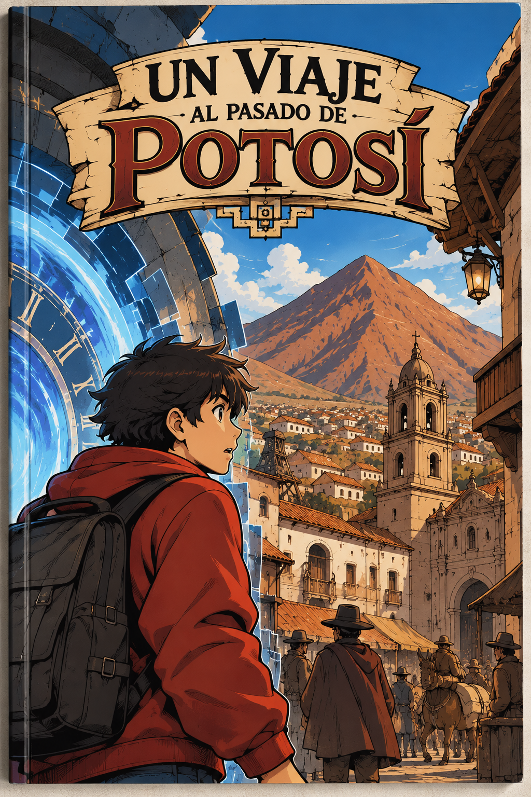
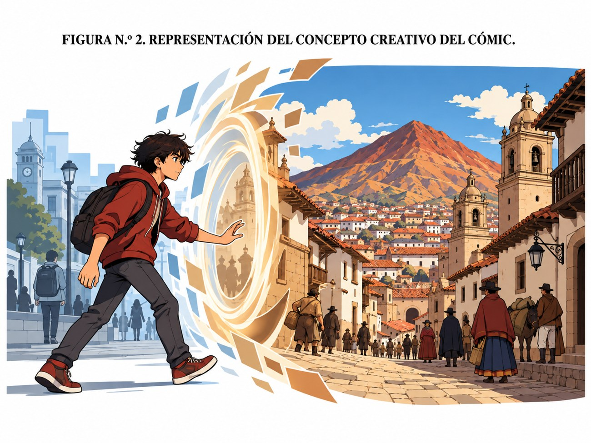
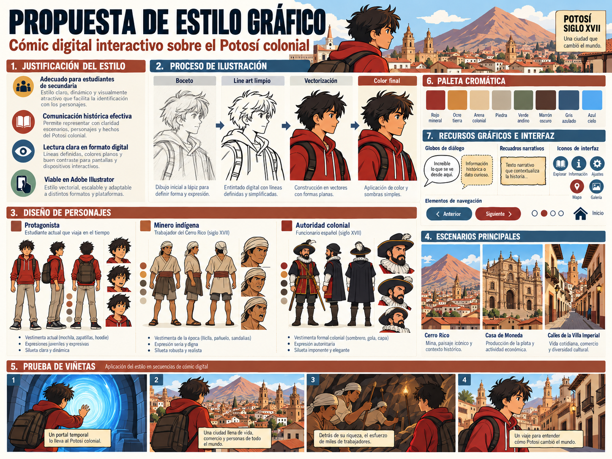

Un viaje al pasado
de Potosí
Una experiencia visual que une ilustración, narrativa gráfica y aprendizaje para acercar a estudiantes de secundaria a la historia colonial de la Villa Imperial.
El protagonista de sudadera roja recorre el presente y el pasado, descubre acontecimientos históricos, observa escenarios patrimoniales y dialoga con personajes inspirados en la época colonial.

Una propuesta pensada para aprender
La estructura reúne guion, ilustración, navegación, actividades y un estilo gráfico consistente. La lectura no solo muestra escenas: también permite reflexionar e interactuar.
Lee, observa y descubre
Recorre los episodios, conoce los espacios que marcaron la historia de Potosí y comprueba lo aprendido con actividades breves al finalizar cada aventura.
Una ciudad con historia
Descubre la Villa Imperial, sus calles, sus construcciones y el papel que tuvo la minería en su desarrollo.
Personajes y relatos
Acompaña al protagonista en un recorrido narrativo que conecta el Potosí actual con escenarios de la época colonial.
Aprende jugando
Responde preguntas, recibe explicaciones y repasa los principales contenidos de cada episodio.
Explora los episodios
Estos episodios organizan el viaje del protagonista y muestran un avance desde el descubrimiento inicial hasta la valoración del patrimonio potosino.
El comienzo de una aventura

Después de leer este episodio, responde preguntas para reforzar la comprensión de los acontecimientos observados.
¿Cuánto sabes de Potosí?
Elige un episodio y responde las preguntas para poner a prueba lo que descubriste durante la lectura.
Diseño, narrativa e identidad histórica
Este recorrido utiliza la narrativa gráfica para acercar la historia colonial de Potosí a estudiantes de secundaria. A través de personajes, escenarios y actividades, invita a conocer los acontecimientos que dieron forma a la Villa Imperial.
Un recorrido que educa y motiva
El recorrido aborda el crecimiento de la Villa Imperial, la explotación de la plata, el trabajo minero, la Casa Nacional de Moneda y distintos aspectos de la vida social durante la época colonial.
El protagonista observa la ciudad y se pregunta cómo fue su pasado.
Un recurso narrativo lo traslada a momentos representativos de la época colonial.
Cada escena organiza personajes, escenarios y diálogos con información histórica breve.
El regreso al presente permite valorar la historia y el patrimonio potosino.
